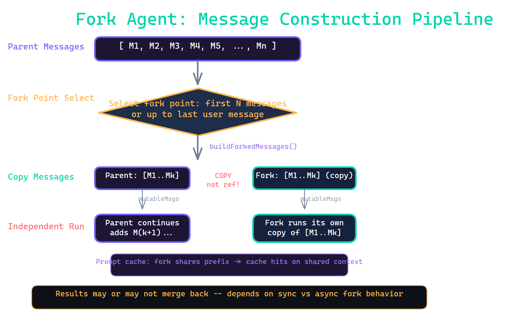

Chapter 02 - Multi-Agent System
6 / 22
isInForkChild() 检测 FORK_BOILERPLATE_TAG 防止fork嵌套
forkSubagent.ts - FORK_AGENT definition
export const FORK_AGENT = {
agentType: 'fork',
tools: ['*'],
maxTurns: 200,
model: 'inherit',
permissionMode: 'bubble',
source: 'built-in',
getSystemPrompt: () => '',
// systemPrompt via override
// (byte-exact rendered bytes)
}
Cache sharing principle
// All children share identical prefix:
[...history,
assistant(all_tool_uses),
user(placeholder_results...,
per_child_directive)]
// Only last text block differs
// = maximum cache hits

Claude Code v2.1.88 � Multi-Agent
6 / 22